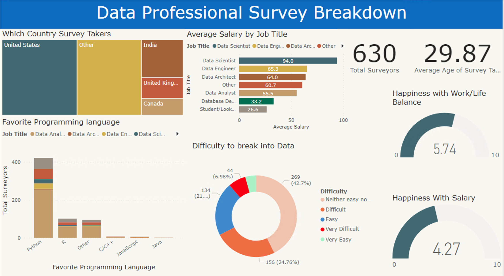
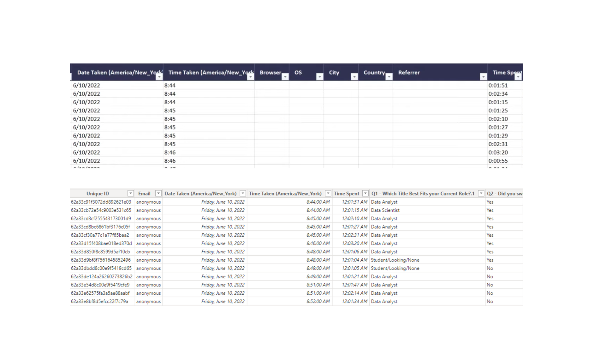
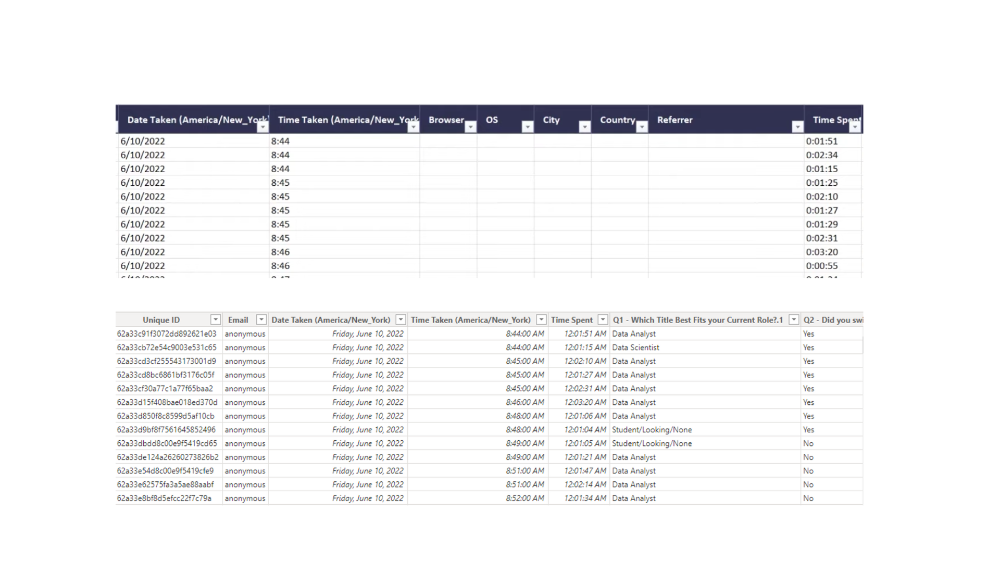
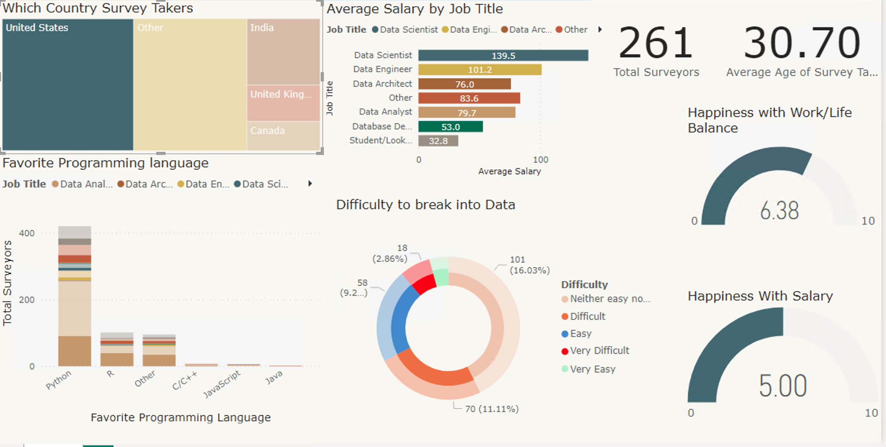
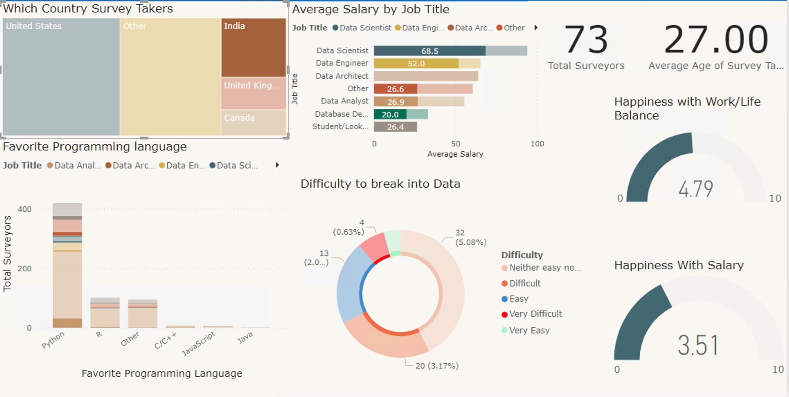
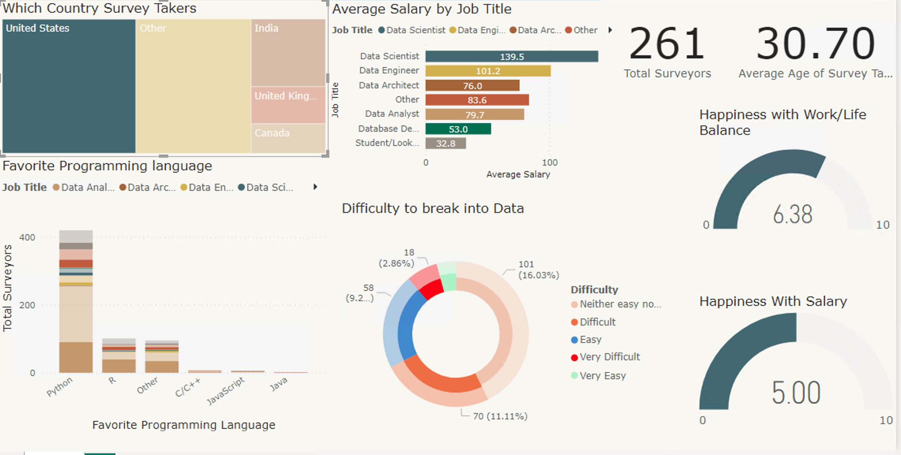
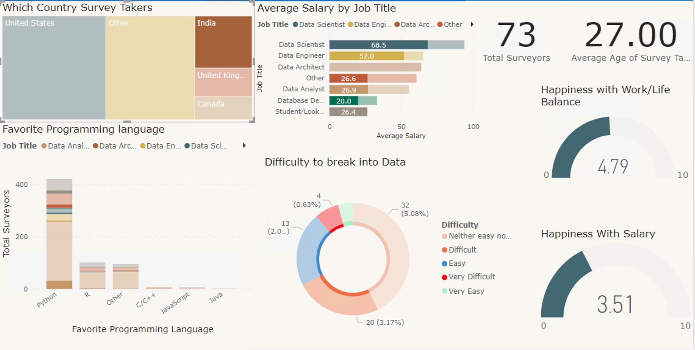

Power BI (Data Professional Survey)
Raw data in Excel
The information utilizes real-world data, and the survey was conducted on a global scale.
Duplicate the column to preserve the original data. Divide the column by separating digits from non-digits. Utilize the "replace values" function to substitute 'k' with nothing, and also remove '-' to obtain the numeric value. Afterward, perform basic arithmetic to calculate the average salary within each row. Utilize the "remove column" function to eliminate unnecessary columns. As well as modifying the date and time settings.
When creating visualizations in Power BI, employ the "card" element to present specific information effectively. As an illustration, count unique IDs to determine the total number of survey participants, their average age, and then exhibit this counts on the card for enhanced visualization.
Utilize a stacked bar chart to depict the average salary of surveyors based on their respective roles.
Employ a stacked column chart to tally the overall number of surveys and showcase their preferred programming languages.
Employ a gauge to assess their level of satisfaction regarding work-life balance and contentment with their salary.
Utilize a pie chart to visually understand the level of difficulty associated with entering the field of data analysis.
Utilize a treemap to enable dynamic value changes based on the selected countries. As evident from the data for USA, UK, and India, the information shifts accordingly when these specific countries are chosen.
United Kingdom
Utilize the "remove column" function to eliminate unnecessary columns. As well as modifying the date and time settings.
When creating visualizations in Power BI, employ the "card" element to present specific information effectively. As an illustration, count unique IDs to determine the total number of survey participants, their average age, and then exhibit this counts on the card for enhanced visualization.
Utilize a stacked bar chart to depict the average salary of surveyors based on their respective roles.
Employ a stacked column chart to tally the overall number of surveys and showcase their preferred programming languages.
Employ a gauge to assess their level of satisfaction regarding work-life balance and contentment with their salary.
Utilize a pie chart to visually understand the level of difficulty associated with entering the field of data analysis.
Utilize a treemap to enable dynamic value changes based on the selected countries. As evident from the data for USA, UK, and India, the information shifts accordingly when these specific countries are chosen.
United Kingdom USA
India
USA
India
View Full Project in GitHub